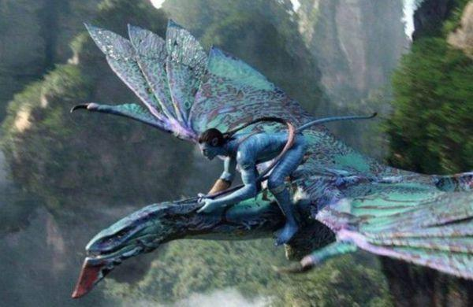

<!DOCTYPE html>
<html>
	<head>
		<meta charset="UTF-8">
		<title></title>
		<meta charset="utf-8" />
		<meta name="viewport" content="width=device-width, initial-scale=1.0">
		<link rel="stylesheet" type="text/css" href="nine.css" />
	</head>
	<body>
		<div id="nineSquare" class="nineSquare">
			<div class="nine"></div>
			<div class="nine"></div>
			<div class="nine"></div>
			<div class="nine"></div>
			<div class="nine"></div>
			<div class="nine"></div>
			<div class="nine"></div>
			<div class="nine"></div>
			<div class="nine"></div>
		</div>
		
		<!--<div>
			
			<p>《阿凡达2》不仅延续了第一部的剧情，讲述了5年后的故事，并且将要引进不少的新角色，来进行全新的人物之间的碰撞，我国著名的打斗明星杨紫琼就将加入，饰演一名科学家。
				在之前的“拖稿”期间，卡梅隆为了抚平大家的内心，一直表示，《阿凡达2》的制作特效将要达到裸眼看3d的效果，以此来证明《阿凡达》拍摄过程中的特效渲染和用心。
				据悉，《阿凡达》续集中，第2、3部一起拍，拍完后统一进行后期制作，随后第4、5部再一起拍。
				去年年底的时候，詹姆斯卡梅隆在自己所录制视频中透露，《阿凡达》多部续集已经基本杀青，而他们即将拍摄一些特技戏份，其中司萨姆沃辛顿、
				佐伊索尔达娜、西格妮韦弗、史蒂芬朗、凯特温斯莱特都已经杀青了。
			</p>
		</div>-->
		
	</body>
</html>
